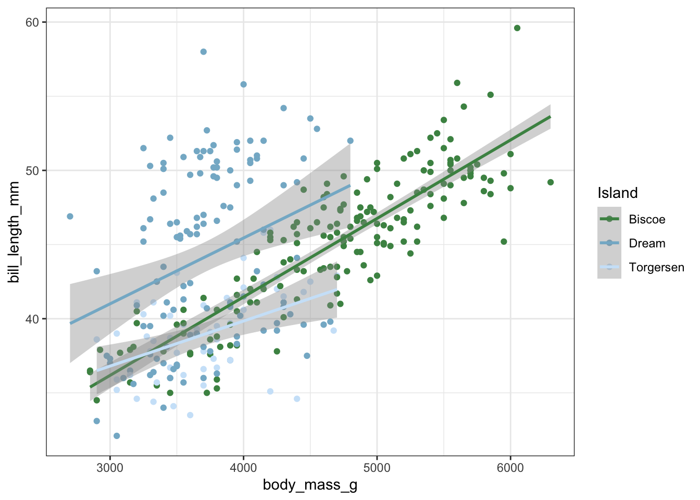
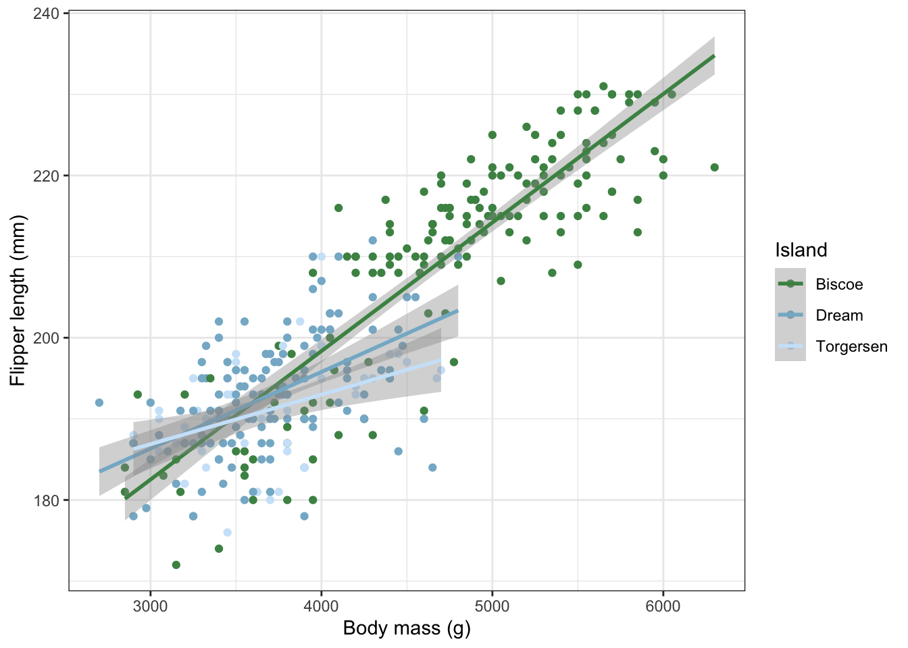
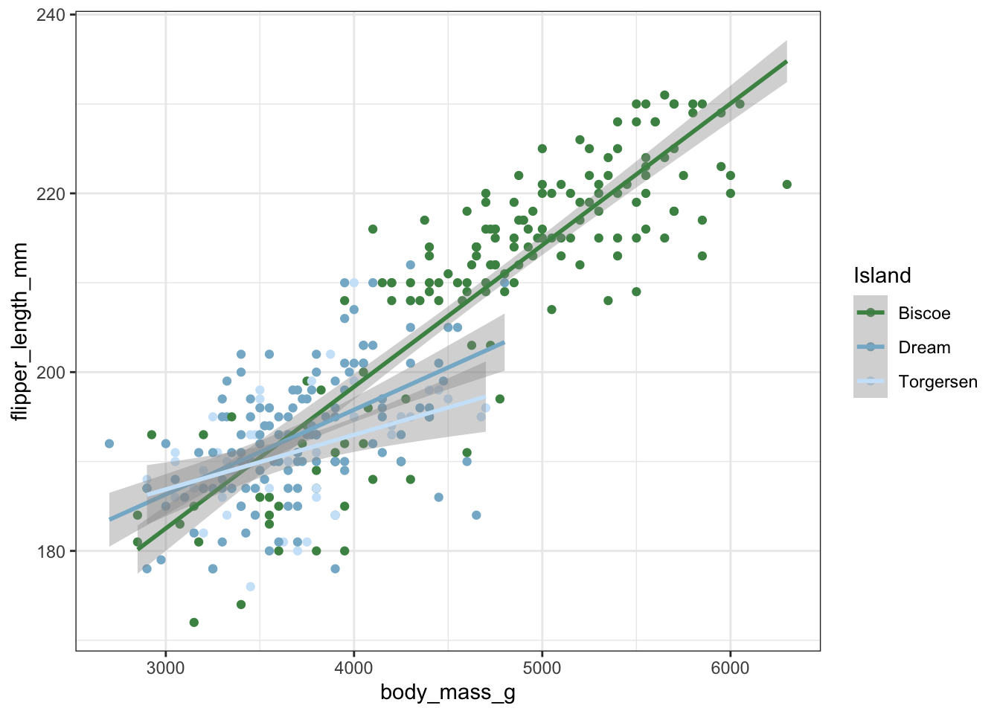
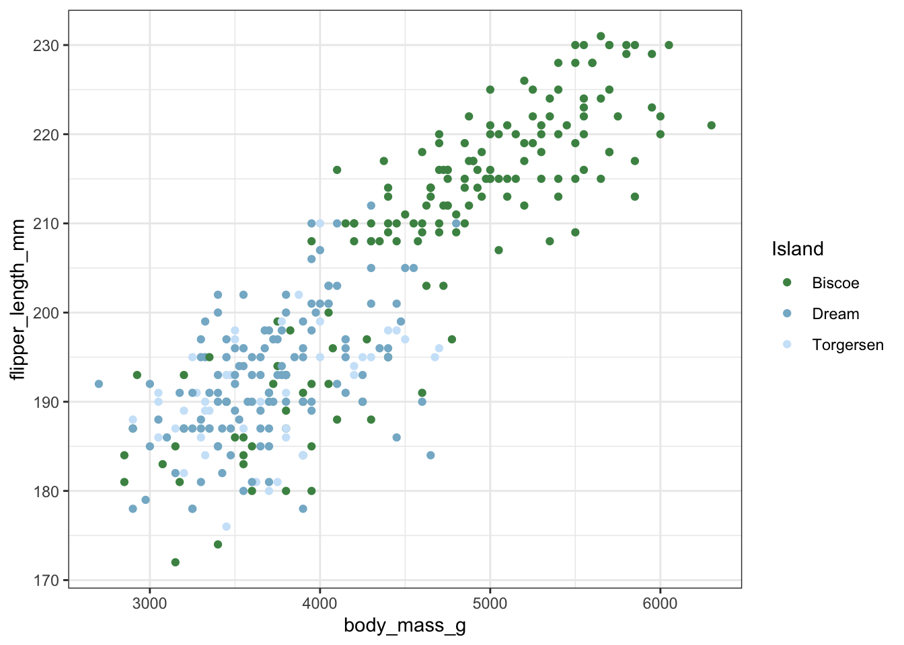

Attaching package: 'palmerpenguins'
The following objects are masked from 'package:datasets':
penguins, penguins_raw
library(PNWColors) # for the PNW color palette library(reprex) #reproducible examplelibrary(datapasta) #copy and pastelibrary(styler) # copy and paste in style)
Practice
df <-tibble(a =rnorm(10), # draws 10 random values from a normal distributionb =rnorm(10),c =rnorm(10),d =rnorm(10))head(df)
# A tibble: 6 × 4
a b c d
<dbl> <dbl> <dbl> <dbl>
1 0.515 0.535 1.71 -0.0794
2 -1.16 0.862 -0.310 -0.642
3 0.748 -1.59 0.797 1.92
4 -1.79 -0.354 -0.624 0.126
5 1.97 1.02 0.633 -0.197
6 -0.293 -0.705 -0.490 -0.562
rnorm = randomly distributed numbers
Basien modeling: use setseed() allows it to be consistent. Run before random number generator.
Anytime you have to do a task more then once…
Let’s use an example where we want to rescale data in multiple columns (value - min/(max - min))
Let’s break it down There are three key steps to creating a new function:
You need to pick a name for the function. Here I’ve used rescale01 because this function rescales a vector to lie between 0 and 1.
You list the inputs, or arguments, to the function inside function. Here we have just one argument. If we had more the call would look like function(x, y, z).
You place the code you have developed in body of the function, a { block that immediately follows function(…).
function() then {}
return tells us what values we want returned when you run the function
rescale01 <-function(x) { value<-(x-min(x, na.rm =TRUE))/(max(x, na.rm =TRUE)-min(x, na.rm =TRUE)) # value can be whatever name you want, return(value) }
One argument here.
rescale01 is now the function that you’ve created (e.g. read_csv) A package is multiple functions put together to use in a library.
Note: It is way easier to create a function when you already wrote the code rather than creating the function from scratch.
# mutate_all(rescale01)
Let’s make a function to covert degrees fahrenheit to celcius. What is the calculation for F to C?
Start out by writing the code you want to use:
temp_C<- (temp_F - 32)*5 / 9
Then figure out what are the different arguments and the inputs and outputs. In this case, input is farenheit and output is celsius.
Note: put your functions at top of your script so it is available throughout the whole script.
Step 5: Test it
fahrenheit_to_celsius(32)
[1] 0
fahrenheit_to_celsius(212)
[1] 100
Note: test with numbers that you know easily off the top of your head.
Think, Pair, Share
Write a function that converts celcius to kelvin. (Remember Kelvin is celcius + 273.15).
Code I want to use:
temp_K<- (temp_C + 273.15)
celsius_to_kelvin<-function(temp_C) # decide what the arguments are (step 3) { # name the function (step 1) temp_K<- (temp_C +273.15) # put in the equation (step 2)return(temp_K) # decide what is being returned (step 4)}celsius_to_kelvin(100)
[1] 373.15
Example use: calculate NCP or NCC
Making plots into a function
Let’s say you have a specifically formatted plot that you like and that you plan to use over and over again. By turning it into a function, you only have to code it once.
Let’s use our favorite penguin dataset and make a nice plot line plot.
pal<-pnw_palette(“Lake”,3, type = “discrete”) # my color palette ggplot(penguins, aes(x = body_mass_g, y = bill_length_mm, color = island))+ geom_point()+ geom_smooth(method = “lm”)+ # add a linear model scale_color_manual(“Island”, values=pal)+ # use pretty colors and another example of how to manually change the legend title for colors theme_bw()
Note: can make a function like this to use the same theme throughout multiple plots.
Making plots into a function
Name and set-up the function.
myplot<-function(){ # copy and pasted code above into the body of the function here: pal<-pnw_palette(“Lake”,3, type = “discrete”) # my color palette ggplot(penguins, aes(x = body_mass_g, y = bill_length_mm, color = island))+ geom_point()+ geom_smooth(method = “lm”)+ # add a linear model scale_color_manual(“Island”, values=pal)+ # use pretty colors and change the legend title theme_bw() }
What do you think our arguments should be?
this funciton can change data, x, and y depending on what data you decide to use
Make the names broad so it can be applicable to several values
myplot<-function(data, x, y){ pal<-pnw_palette(“Lake”,3, type = “discrete”) # my color palette ggplot(data = data, aes(x = x, y =y , color = island))+ geom_point()+ geom_smooth(method = “lm”)+ # add a linear model scale_color_manual(“Island”, values=pal)+ # use pretty colors and change the legend title theme_bw() }
Test it:
Well, shoot, I got an error…. why do we think that is?
Why an error? The function does not know that those are within the data set. So we need to be explicit about what columns are.
myplot(data = penguins, x = body_mass_g, y = bill_length_mm)
Even though body_mass_g exists within the penguin dataframe, there is still no individual parameter called body_mass_g in our environment and R is confused.
There is a solution though from within the {rlang} package (a part of the tidyverse)!
{rlang} uses what is literally called a “curly-curly” {{}} to help us assign variables that are column names in dataframes.
Make it easier to manipulate them within functions
Let’s add curly-curlies to the column names
myplot<-function(data, x, y){ pal<-pnw_palette("Lake",3, type ="discrete") # my color palette ggplot(data, aes(x = {{x}}, y = {{y}} , color = island))+geom_point()+geom_smooth(method ="lm")+# add a linear modelscale_color_manual("Island", values=pal)+# use pretty colors and change the legend titletheme_bw()}
Use in a function any time you want to use a column within a tibble.
{{}} is saying that you can put anything in x and anything in y
Test again
myplot(data = penguins, x = body_mass_g, y = bill_length_mm)
`geom_smooth()` using formula = 'y ~ x'
Warning: Removed 2 rows containing non-finite outside the scale range
(`stat_smooth()`).
Warning: Removed 2 rows containing missing values or values outside the scale range
(`geom_point()`).

Test with new variables.
Whatever continuous x or y and flip it out to whatever. Will always be the same colors to islands and same geom_smooth, etc.
myplot(data = penguins, x = body_mass_g, y = flipper_length_mm)
`geom_smooth()` using formula = 'y ~ x'
Warning: Removed 2 rows containing non-finite outside the scale range
(`stat_smooth()`).
Warning: Removed 2 rows containing missing values or values outside the scale range
(`geom_point()`).
Adding defualts
Let’s say you want to create a default for the function to always default to the penguins dataset. You can set those directly in the function.
myplot<-function(data = penguins, x, y){ # going to always assume that data is penguinspal<-pnw_palette("Lake",3, type ="discrete") # my color palette ggplot(data, aes(x = {{x}}, y = {{y}} , color = island))+geom_point()+geom_smooth(method ="lm")+# add a linear modelscale_color_manual("Island", values=pal)+# use pretty colors and change the legend titletheme_bw()}
Defaults
Now, you can just write…
Dont need to write data because it is assuming the data is penguins.
myplot(x = body_mass_g, y = flipper_length_mm)
`geom_smooth()` using formula = 'y ~ x'
Warning: Removed 2 rows containing non-finite outside the scale range
(`stat_smooth()`).
Warning: Removed 2 rows containing missing values or values outside the scale range
(`geom_point()`).
Layering the plot
You can also layer onto your plot using ‘+’ just like it is a regular ggplot to change things like labels.
myplot(x = body_mass_g, y = flipper_length_mm)+labs(x ="Body mass (g)",y ="Flipper length (mm)")
`geom_smooth()` using formula = 'y ~ x'
Warning: Removed 2 rows containing non-finite outside the scale range
(`stat_smooth()`).
Warning: Removed 2 rows containing missing values or values outside the scale range
(`geom_point()`).

Note: can now manipulate plot in any way we already learned with the + signs
Add an if-else statement for more flexibility.
An aside on if-else statements….
If this argument is true, then add something.
Imagine you want a variable to be equal to a certain value if a condition is met. This is a typical problem that requires the if … else … construct. For instance:
a <-4b <-5
Suppose that if a > b then f should be = to 20, else f should be equal to 10. Using if/else we:
if (a > b) { # my question f <-20# if it is true give me answer 1 } else { # else give me answer 2 f <-10}
If a > b make f assigned to 20, if it is anything else make f assigned to 10
When I type f I get…
f
[1] 10
Because a is less than b in this case.
Back to plotting
Using if…else… we can make our function even more flexible.
Let’s say we want the option of adding the geom_smooth lines or not.
We can create a variable that if set to TRUE add the geom_smooth, otherwise print without.
First add a new argument for lines and make the default TRUE for ease.
myplot<-function(data = penguins, x, y, lines=TRUE ){ # add new argument for linespal<-pnw_palette("Lake",3, type ="discrete") # my color palette ggplot(data, aes(x = {{x}}, y = {{y}} , color = island))+geom_point()+geom_smooth(method ="lm")+# add a linear modelscale_color_manual("Island", values=pal)+# use pretty colors and change the legend titletheme_bw()}
If-else Next, add an if-else statement
myplot<-function(data = penguins, x, y, lines=TRUE ){ # add new argument for linespal<-pnw_palette("Lake",3, type ="discrete") # my color palette if(lines==TRUE){ggplot(data, aes(x = {{x}}, y = {{y}} , color = island))+geom_point()+geom_smooth(method ="lm")+# add a linear modelscale_color_manual("Island", values=pal)+# use pretty colors and change the legend titletheme_bw()} # curly for if statementelse{ggplot(data, aes(x = {{x}}, y = {{y}} , color = island))+geom_point()+# no geom_smooth herescale_color_manual("Island", values=pal)+# use pretty colors and change the legend titletheme_bw()} # curly for else statement} # curly for entire function
Test it With lines
myplot(x = body_mass_g, y = flipper_length_mm)
`geom_smooth()` using formula = 'y ~ x'
Warning: Removed 2 rows containing non-finite outside the scale range
(`stat_smooth()`).
Warning: Removed 2 rows containing missing values or values outside the scale range
(`geom_point()`).

Without lines
myplot(x = body_mass_g, y = flipper_length_mm, lines =FALSE)
Warning: Removed 2 rows containing missing values or values outside the scale range
(`geom_point()`).

Today’s totally awesome R package
{emokid}: Make your code more emo… you’ve used the praise package, but if you need to express your frustrations now you can let the world know you are sad
devtools::install_github(“itsrainingdata/emokid”) For when you are really sad
library(emokid) iamsad() more nights of hugging my pillow, oh replaying memories. 😿 For when you are less sad
iamlesssad() i can’t dream anymore since you left. i miss you singing me to sleep. 😔
Homework Use any dataset you would like and make two useful functions. One that is a plot and one that is not. Turn in your functions using Quarto with at least 2 examples per function showing its flexibility. Due, as always, at 1pm on Tuesday.
Fun fact: “…the very first instance of a computer bug was recorded at 3:45 pm (15:45) on the 9th of September 1947. This”bug” was an actual real-life, well ex-moth, that was extracted from the number 70 relay, Panel F, of the Harvard Mark II Aiken Relay Calculator.” A literal bug! (Christopher McFadden, Interesting Engineering)
If you’re asking: What package or function should I use to do this thing?
Google it: (I ALWAYS have google open when I am coding)
Search with the keywords and package/function name if known, and include .R in the search keywords (e.g. “dplyr::mutate add column in .R” instead of “mutate variable”)
“R” is generic - so consider using “R software” or “.R” Start learning and using language common in R communities & publications (e.g. R4DS), like data frame or tibble instead of spreadsheet
How to know there is an error and where to look for it?
When you save a script, lines of code with some errors (e.g. unmatched parentheses) will have a red circle with an x in it next to the line number.
You might also see a red squiggly line under part of your code, indicating a syntax issue. You can hover over the squiggly to see a pop-up hint about what’s going on.
Also try rainbow parentheses!
gives different color for different parantheses ()
Error messages will show up* in the Console when you try to run the broken code
There are multiple types of messages that R will print. Read the message to figure out what it’s trying to tell you.
Error: There’s a fatal error in your code that prevented it from being run through successfully. You need to fix it for the code to run.
Warning: Non-fatal errors (doesn’t stop the code from running, but this is a potential problem that you should know about). Will still run code but it may be wrong.
Message: Here’s some helpful information about the code you just ran (you can hide these if you want to).
When you get an error message in R:
Read the error message. Did you read the error message? Read the error message. Sometimes it will be infuriatingly vague, but often it will tell you exactly how to fix it.
(e.g. “do you need ==?”).
For example: did you use a logical with just one equal sign instead of 2?
Some common errors/issues to keep an eye out for at the beginning (and forever and ever…)
If R…can’t find a function that you know exists:
Symptom:
‘Error in _________: could not find function “_________”’
Likely diagnoses:
The library containing the function you’re trying to use hasn’t been attached.
You’ve misspelled or mistyped the function name.
Possible solutions:
Make sure you’ve attached the required package with library(package_name) - and remember this line should exist in your script before the code that uses a function from that package
Make sure you’ve run the line of code that attaches the necessary package.
Check the function spelling/formatting very carefully
If R…can’t find the pipe operator:
Symptom:
‘Error in ____ %>% ____ : could not find function “%>%”’
Likely diagnoses:
Haven’t attached the tidyverse (w/ library(tidyverse)) before using the pipe.
Haven’t run the line of code to attach the tidyverse.
Possible solutions:
Make sure you’ve attached the tidyverse with library(tidyverse) - and remember this line should exist in your script before the code that uses %>%
Make sure you’ve run the line of code that attaches the tidyverse.
If R…can’t find an object (e.g. an object or variable) that you know you’ve stored:
Symptom:
‘Error in ____ : object ‘_____’ not found’
Likely Diagnosis:
The object hasn’t been created or stored
You’ve mistyped the object name
Possible Solution:
Make sure you’ve run the line(s) of code where you read-in or create the object (e.g read_csv)
Make sure you’ve spelled/typed the object name exactly as it exists in the Environment
Use ls() to check which objects exist in your current workspace (and if it’s not there, then it hasn’t been created/stored yet)
If R…tells you it’s ignoring an argument within a function.
You’ve included an argument that doesn’t exist for that function
You’ve mistyped an argument that does exist for that function
Possible solutions:
Check to ensure that the argument you’re trying to use for that function (a) exists, and (b) is entered exactly how R expects it to be in your code - especially checking for spelling, abbreviation & capitalization
How to find out what arguments are accepted by which functions:
Viewing the R documentation with ?function_name, and look in the ‘Arguments’ section (or ‘Aesthetics’ section for geoms in ggplot2)
If you…are trying to make a basic ggplot2 graph and you accidentally use %>% between layers instead of a +
Symptoms:
‘Error: mapping must be created by aes()
Did you use %>% instead of +?’
Diagnosis:
Used the pipe operator %>% instead of + to add ggplot2 layers?
Possible solutions:
Switch to + for ggplot2!
If you…think your ggplot code looks perfect and you’re not getting an error message, but only an empty graph is showing up:
Symptoms:
Empty ggplot
Possible diagnoses:
Did you check what the data you’re trying to plot looks like? For example, did you accidentally filter out all observations in a previous step?
Did you forget a plus sign to add the geom_* layer?
Possible solutions:
Make sure there is a plus sign (+) between all ggplot layers.
Look at the data you’re trying to plot to ensure it exists
If you…are trying to change some aesthetic in a ggplot graph, but you’re getting an error:
Symptom:
Error in rep(value[[k]], length.out = n) :
attempt to replicate an object of type ‘closure’
Possible diagnoses:
Did you forget that when you’re referencing a variable in ggplot, it needs to be within an aes() function?
Put something outside of aes() instead of inside
Possible solutions:
Make sure that when you’re updating a graph aesthetic based on a variable in the data frame, you have that argument within aes().
If you…are trying to find a summary value for a variable that you know contains numbers, but you’re getting an NA result and/or a warning message:
Symptom(s):
NA returned when summary statistic value (e.g. mean) expected
‘In __ : argument is not numeric or logical: returning NA’
Possible diagnoses:
The default argument of the function is na.rm = “FALSE”.
The class of non-NA values is not numeric (e.g.., there are words in the column or R otherwise doesn’t know the class should be “numeric”).
e.g may have to change your mean to be na.rm = “TRUE” so that you don’t get an NA when looking for mean, min, or max if that exists within dataframe
e.g trying to get mean of column that has characters (non-numeric), soi naje sure column is numeric
Possible solutions:
If the variable is numeric (check class), update argument to na.rm = “TRUE”
Coerce variable class to “numeric” if appropriate/possible.
Can’t figure out what’s going on from the error message directly?
Look over code very carefully - character-by-character and space-by-space. Run line-by-line to see where it breaks. Some things to pay close attention to at this point:
Are all parentheses matching pairs?
Have you typed in all functions, objects, and conditions in exactly correctly?
If you run something and it doesn’t show up, did you call it to have it show up, or have you just asked R to store it?
Have you looked at all intermediate data frames during wrangling to make sure data are being subset & transformed as expected?
Google the copied & pasted error message. Someone else has encountered and solved it before. Find them often on Stack Overflow. Beware rabbit holes and grumps.
Take a break and come back to it.
Make a small, reproducible example (reprex up next!) and see if you can recreate the error. I realize and resolve many errors by trying to make something work in a simpler, self-contained example.
Don’t forget the flip-side!
Just because you don’t get an error message doesn’t mean that you did things correctly - it just means that the code is running.
So LOOK AT YOUR RAW DATA, INTERMEDIATE DATA AND RESULTS - especially just after reading it in and after wrangling steps - to ensure that what you think your code is supposed to be doing with/to your data is actually what your code is doing with/to your data.
Supportive R communities
The RStudio community
“#rstats” on BlueSky - no seriously, create an account. Some to follow right away for maximum R learning, commentary and community: @dataandme.bsky.social, @cedricsherer.com, @juliasilge.com, @posit.co, @kawawoo.com. @themockup.blog, @jennybryan.bsky.social,@noamross.net, @johnthegeek.com, @dslc.io, @womenindataviz.bsky.social, @juliesquid.bsky.social, @hadleywickham.bsky.social, @paul-buerkner.bsky.social, @r-foundation.bsky.social, @quarto.org, @bigbookofr.bsky.social
ChatGPT
Chat GPT is a “large language model” that follows an instruction in a prompt and provides a detailed response.
A.I. can be a very helpful tool, but it is only as smart as you… if you do not know how to debug code and you trust it blindly you will find yourself in a lot of trouble. Use it to assist you, but do not use it to replace you.
Why should you be careful with ChatGPT?
“If you’re solely relying on ChatGPT to learn how to code, you could be missing out on some crucial programming principles — like knowing how to solve problems, understanding how to read tech documentation, getting comfortable with trial and error, and building things on your own. “With coding, you need to know the fundamentals,” Julie says. “If you don’t know the fundamentals, then I don’t think the tool will be that helpful to you.” Code Academy
There are some good blog posts on tips for using ChatGPT to help with coding problems. Here is one from R bloggers
Here is an example of a prompt and a response:
Prompt: explain this R code: m1 <- gam(y ~ s(year, by = sites), data = my_data, family = “poisson”)
GPT: The code m1 <- gam(y ~ s(year, by = sites), data = my_data) specifies a generalized additive model (GAM) in R.
Here’s what each part of the code means:
m1 <- : assigns the output of the model to the object named m1. gam() : specifies that we want to fit a generalized additive model. y ~ s(year, by = sites) : specifies the model formula, where y is the response variable and year is the predictor variable of interest. The function s() specifies that year is a smooth function, which allows for a flexible fit to the data. The by = sites argument specifies that we want to fit separate smooth functions for each sites level, which is a way to model site-specific effects. note: anytime I have asked chat GPT to code me something slightly more complicated it has given me errors or made up functions that don’t exist. Again, use it as a tool, not a replacement for learning.
Other helpful resources and a package!
ChatGPT: Smart, but not smart enough - Can generative AI teach you to code? It’s complicated
I asked ChatGPT!
I asked ChatGPT to tell me how to best use LLMs to ask for help in R and here is what it told me. I put it into a Quarto doc for you. Note: As a UH student you have Gemini Pro for free. Basic ChatGPT, but Pro is not.
install.packages(‘reprex’) #reproducible example
install.packages(‘datapasta’) #copy and paste
install.packages(‘styler’) # copy and paste in style
When asking the R community for help, it is really important to give them enough information to help you. Remember, they don’t have your computer or your data and they are not in your head. Help them help you.
By running code with {reprex}, you can create a reproducible example to post to Stack Overflow, Slack, GitHub, or an email to your collaborator.
They will have ewverything packaged together that they need to run your code.
Making your first reprex
Let’s say you are trying to make a plot with the mpg dataset and you hit an error.
Error in geom_point():
mapping must be created by aes().
Did you use %>% or |> instead of +?
Steps:
put code into script
highlight code that you are trying to reproduce
Go to tabs and click Tools
Go to Addins -> Render Reprex -> Execute
Decide what venue you want
Paste to the program you want.
Make sure to “append session info”. So that people know what packages you have and version of R, etc.
In bottom right “Viewer” in R, it will show you what it would look like on StackOverflow formatted and all session info of everything thats loaded for you in your session.
go to Stackoverflow, create account, ask a question, and paste into body.
Using real data
Often you are working with real data and run into an issue. You need the example to be reproducible and simple. Other people on the internet do not have your data so what should we do?
Open the stars.csv file and copy and paste the first few lines into R.
You can now use this with {reprex} to make a reproducible example that can fully run with your own data and code.
Do’s and don’t of reprex
1.Use the smallest, simplest, most built-in data possible.
e.g. using datapasta
give them only 10 lines of data instead of all of it
Include commands on a strict “need to run” basis.
Ruthlessly strip out anything unrelated to the specific matter at hand.
Include every single command that is required, e.g. loading specific packages
only load packages and code specifically required to error you have.
Pack it in, pack it out, and don’t take liberties with other people’s computers. You are asking people to run this code!
Don’t start with rm(list = ls()). It is anti-social to clobber other people’s workspaces. This will delte their workspace.
Don’t start with setwd(“C:”), because it won’t work on anyone else’s computer.
Don’t mask built-in functions, i.e. don’t define a new function named c or mean.
If you change options, store original values at the start, do your thing, then restore them.
If you create files, delete them at end of reprex when you’re done.
Use good coding style.
The reprex code:
Must run and, therefore, should be run by the person posting. No faking it. Actually run the code.
Should be easy for others to digest, so they don’t necessarily have to run it. You are encouraged to include selected bits of output.
Should be easy for others to copy + paste + run, if and only if they so choose. Don’t let inclusion of output break execute-ability. Put outputs in hastags for example.
https://reprex.tidyverse.org/articles/reprex-dos-and-donts.html.
Practice on your own.
Make some simple code and add a bug. Use datapasta and reprex to make a reproducible example and post it to our slack channel. Make sure to add your session info.
Ask someone to fix it and find a solution.
See if you can debug someone else’s errors.